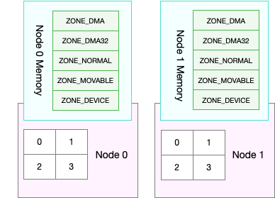

- 00 开篇词 别再让Linux性能问题成为你的绊脚石.md.html
- 01 如何学习Linux性能优化？.md.html
- 02 基础篇：到底应该怎么理解“平均负载”？.md.html
- 03 基础篇：经常说的 CPU 上下文切换是什么意思？（上）.md.html
- 04 基础篇：经常说的 CPU 上下文切换是什么意思？（下）.md.html
- 05 基础篇：某个应用的CPU使用率居然达到100%，我该怎么办？.md.html
- 06 案例篇：系统的 CPU 使用率很高，但为啥却找不到高 CPU 的应用？.md.html
- 07 案例篇：系统中出现大量不可中断进程和僵尸进程怎么办？（上）.md.html
- 08 案例篇：系统中出现大量不可中断进程和僵尸进程怎么办？（下）.md.html
- 09 基础篇：怎么理解Linux软中断？.md.html
- 10 案例篇：系统的软中断CPU使用率升高，我该怎么办？.md.html
- 11 套路篇：如何迅速分析出系统CPU的瓶颈在哪里？.md.html
- 12 套路篇：CPU 性能优化的几个思路.md.html
- 13 答疑（一）：无法模拟出 RES 中断的问题，怎么办？.md.html
- 14 答疑（二）：如何用perf工具分析Java程序？.md.html
- 15 基础篇：Linux内存是怎么工作的？.md.html
- 16 基础篇：怎么理解内存中的Buffer和Cache？.md.html
- 17 案例篇：如何利用系统缓存优化程序的运行效率？.md.html
- 18 案例篇：内存泄漏了，我该如何定位和处理？.md.html
- 19 案例篇：为什么系统的Swap变高了（上）.md.html
- 20 案例篇：为什么系统的Swap变高了？（下）.md.html
- 21 套路篇：如何“快准狠”找到系统内存的问题？.md.html
- 22 答疑（三）：文件系统与磁盘的区别是什么？.md.html
- 23 基础篇：Linux 文件系统是怎么工作的？.md.html
- 24 基础篇：Linux 磁盘I_O是怎么工作的（上）.md.html
- 25 基础篇：Linux 磁盘I_O是怎么工作的（下）.md.html
- 26 案例篇：如何找出狂打日志的“内鬼”？.md.html
- 27 案例篇：为什么我的磁盘I_O延迟很高？.md.html
- 28 案例篇：一个SQL查询要15秒，这是怎么回事？.md.html
- 29 案例篇：Redis响应严重延迟，如何解决？.md.html
- 30 套路篇：如何迅速分析出系统I_O的瓶颈在哪里？.md.html
- 31 套路篇：磁盘 I_O 性能优化的几个思路.md.html
- 32 答疑（四）：阻塞、非阻塞 I_O 与同步、异步 I_O 的区别和联系.md.html
- 33 关于 Linux 网络，你必须知道这些（上）.md.html
- 34 关于 Linux 网络，你必须知道这些（下）.md.html
- 35 基础篇：C10K 和 C1000K 回顾.md.html
- 36 套路篇：怎么评估系统的网络性能？.md.html
- 37 案例篇：DNS 解析时快时慢，我该怎么办？.md.html
- 38 案例篇：怎么使用 tcpdump 和 Wireshark 分析网络流量？.md.html
- 39 案例篇：怎么缓解 DDoS 攻击带来的性能下降问题？.md.html
- 40 案例篇：网络请求延迟变大了，我该怎么办？.md.html
- 41 案例篇：如何优化 NAT 性能？（上）.md.html
- 42 案例篇：如何优化 NAT 性能？（下）.md.html
- 43 套路篇：网络性能优化的几个思路（上）.md.html
- 44 套路篇：网络性能优化的几个思路（下）.md.html
- 45 答疑（五）：网络收发过程中，缓冲区位置在哪里？.md.html
- 46 案例篇：为什么应用容器化后，启动慢了很多？.md.html
- 47 案例篇：服务器总是时不时丢包，我该怎么办？（上）.md.html
- 48 案例篇：服务器总是时不时丢包，我该怎么办？（下）.md.html
- 49 案例篇：内核线程 CPU 利用率太高，我该怎么办？.md.html
- 50 案例篇：动态追踪怎么用？（上）.md.html
- 51 案例篇：动态追踪怎么用？（下）.md.html
- 52 案例篇：服务吞吐量下降很厉害，怎么分析？.md.html
- 53 套路篇：系统监控的综合思路.md.html
- 54 套路篇：应用监控的一般思路.md.html
- 55 套路篇：分析性能问题的一般步骤.md.html
- 56 套路篇：优化性能问题的一般方法.md.html
- 57 套路篇：Linux 性能工具速查.md.html
- 58 答疑（六）：容器冷启动如何性能分析？.md.html
- 加餐（一） 书单推荐：性能优化和Linux 系统原理.md.html
- 加餐（二） 书单推荐：网络原理和 Linux 内核实现.md.html
- 用户故事 “半路出家 ”，也要顺利拿下性能优化！.md.html
- 用户故事 运维和开发工程师们怎么说？.md.html
- 结束语 愿你攻克性能难关.md.html
- 捐赠
19 案例篇：为什么系统的Swap变高了（上）
你好，我是倪朋飞。
上一节，我通过一个斐波那契数列的案例，带你学习了内存泄漏的分析。如果在程序中直接或间接地分配了动态内存，你一定要记得释放掉它们，否则就会导致内存泄漏，严重时甚至会耗尽系统内存。
不过，反过来讲，当发生了内存泄漏时，或者运行了大内存的应用程序，导致系统的内存资源紧张时，系统又会如何应对呢？
在内存基础篇我们已经学过，这其实会导致两种可能结果，内存回收和 OOM 杀死进程。
我们先来看后一个可能结果，内存资源紧张导致的 OOM（Out Of Memory），相对容易理解，指的是系统杀死占用大量内存的进程，释放这些内存，再分配给其他更需要的进程。
这一点我们前面详细讲过，这里就不再重复了。
接下来再看第一个可能的结果，内存回收，也就是系统释放掉可以回收的内存，比如我前面讲过的缓存和缓冲区，就属于可回收内存。它们在内存管理中，通常被叫做文件页（File-backed Page）。
大部分文件页，都可以直接回收，以后有需要时，再从磁盘重新读取就可以了。而那些被应用程序修改过，并且暂时还没写入磁盘的数据（也就是脏页），就得先写入磁盘，然后才能进行内存释放。
这些脏页，一般可以通过两种方式写入磁盘。
可以在应用程序中，通过系统调用 fsync ，把脏页同步到磁盘中；
也可以交给系统，由内核线程 pdflush 负责这些脏页的刷新。
除了缓存和缓冲区，通过内存映射获取的文件映射页，也是一种常见的文件页。它也可以被释放掉，下次再访问的时候，从文件重新读取。
除了文件页外，还有没有其他的内存可以回收呢？比如，应用程序动态分配的堆内存，也就是我们在内存管理中说到的匿名页（Anonymous Page），是不是也可以回收呢？
我想，你肯定会说，它们很可能还要再次被访问啊，当然不能直接回收了。非常正确，这些内存自然不能直接释放。
但是，如果这些内存在分配后很少被访问，似乎也是一种资源浪费。是不是可以把它们暂时先存在磁盘里，释放内存给其他更需要的进程？
其实，这正是Linux的Swap机制。Swap把这些不常访问的内存先写到磁盘中，然后释放这些内存，给其他更需要的进程使用。再次访问这些内存时，重新从磁盘读入内存就可以了。
在前几节的案例中，我们已经分别学过缓存和OOM的原理和分析。那Swap 又是怎么工作的呢？因为内容比较多，接下来，我将用两节课的内容，带你探索Swap的工作原理，以及Swap升高后的分析方法。
今天我们先来看看，Swap究竟是怎么工作的。
Swap原理
前面提到，Swap说白了就是把一块磁盘空间或者一个本地文件（以下讲解以磁盘为例），当成内存来使用。它包括换出和换入两个过程。
所谓换出，就是把进程暂时不用的内存数据存储到磁盘中，并释放这些数据占用的内存。
而换入，则是在进程再次访问这些内存的时候，把它们从磁盘读到内存中来。
所以你看，Swap其实是把系统的可用内存变大了。这样，即使服务器的内存不足，也可以运行大内存的应用程序。
还记得我最早学习Linux操作系统时，内存实在太贵了，一个普通学生根本就用不起大的内存，那会儿我就是开启了Swap来运行Linux桌面。当然，现在的内存便宜多了，服务器一般也会配置很大的内存，那是不是说Swap就没有用武之地了呢？
当然不是。事实上，内存再大，对应用程序来说，也有不够用的时候。
一个很典型的场景就是，即使内存不足时，有些应用程序也并不想被OOM杀死，而是希望能缓一段时间，等待人工介入，或者等系统自动释放其他进程的内存，再分配给它。
除此之外，我们常见的笔记本电脑的休眠和快速开机的功能，也基于Swap 。休眠时，把系统的内存存入磁盘，这样等到再次开机时，只要从磁盘中加载内存就可以。这样就省去了很多应用程序的初始化过程，加快了开机速度。
话说回来，既然Swap是为了回收内存，那么Linux到底在什么时候需要回收内存呢？前面一直在说内存资源紧张，又该怎么来衡量内存是不是紧张呢？
一个最容易想到的场景就是，有新的大块内存分配请求，但是剩余内存不足。这个时候系统就需要回收一部分内存（比如前面提到的缓存），进而尽可能地满足新内存请求。这个过程通常被称为直接内存回收。
除了直接内存回收，还有一个专门的内核线程用来定期回收内存，也就是kswapd0。为了衡量内存的使用情况，kswapd0定义了三个内存阈值（watermark，也称为水位），分别是
页最小阈值（pages_min）、页低阈值（pages_low）和页高阈值（pages_high）。剩余内存，则使用 pages_free 表示。
这里，我画了一张图表示它们的关系。
kswapd0定期扫描内存的使用情况，并根据剩余内存落在这三个阈值的空间位置，进行内存的回收操作。
剩余内存小于页最小阈值，说明进程可用内存都耗尽了，只有内核才可以分配内存。
剩余内存落在页最小阈值和页低阈值中间，说明内存压力比较大，剩余内存不多了。这时kswapd0会执行内存回收，直到剩余内存大于高阈值为止。
剩余内存落在页低阈值和页高阈值中间，说明内存有一定压力，但还可以满足新内存请求。
剩余内存大于页高阈值，说明剩余内存比较多，没有内存压力。
我们可以看到，一旦剩余内存小于页低阈值，就会触发内存的回收。这个页低阈值，其实可以通过内核选项 /proc/sys/vm/min_free_kbytes 来间接设置。min_free_kbytes 设置了页最小阈值，而其他两个阈值，都是根据页最小阈值计算生成的，计算方法如下 ：
pages_low = pages_min*5/4
pages_high = pages_min*3/2
NUMA与Swap
很多情况下，你明明发现了 Swap 升高，可是在分析系统的内存使用时，却很可能发现，系统剩余内存还多着呢。为什么剩余内存很多的情况下，也会发生 Swap 呢？
看到上面的标题，你应该已经想到了，这正是处理器的 NUMA （Non-Uniform Memory Access）架构导致的。
关于 NUMA，我在 CPU 模块中曾简单提到过。在 NUMA 架构下，多个处理器被划分到不同 Node 上，且每个 Node 都拥有自己的本地内存空间。
而同一个 Node 内部的内存空间，实际上又可以进一步分为不同的内存域（Zone），比如直接内存访问区（DMA）、普通内存区（NORMAL）、伪内存区（MOVABLE）等，如下图所示：

先不用特别关注这些内存域的具体含义，我们只要会查看阈值的配置，以及缓存、匿名页的实际使用情况就够了。
既然 NUMA 架构下的每个 Node 都有自己的本地内存空间，那么，在分析内存的使用时，我们也应该针对每个 Node 单独分析。
你可以通过 numactl 命令，来查看处理器在 Node 的分布情况，以及每个 Node 的内存使用情况。比如，下面就是一个 numactl 输出的示例：
$ numactl --hardware
available: 1 nodes (0)
node 0 cpus: 0 1
node 0 size: 7977 MB
node 0 free: 4416 MB
...
这个界面显示，我的系统中只有一个 Node，也就是Node 0 ，而且编号为 0 和 1 的两个 CPU， 都位于 Node 0 上。另外，Node 0 的内存大小为 7977 MB，剩余内存为 4416 MB。
了解了 NUNA 的架构和 NUMA 内存的查看方法后，你可能就要问了这跟 Swap 有什么关系呢？
实际上，前面提到的三个内存阈值（页最小阈值、页低阈值和页高阈值），都可以通过内存域在 proc 文件系统中的接口 /proc/zoneinfo 来查看。
比如，下面就是一个 /proc/zoneinfo 文件的内容示例：
$ cat /proc/zoneinfo
...
Node 0, zone Normal
pages free 227894
min 14896
low 18620
high 22344
...
nr_free_pages 227894
nr_zone_inactive_anon 11082
nr_zone_active_anon 14024
nr_zone_inactive_file 539024
nr_zone_active_file 923986
...
这个输出中有大量指标，我来解释一下比较重要的几个。
pages处的min、low、high，就是上面提到的三个内存阈值，而free是剩余内存页数，它跟后面的 nr_free_pages 相同。
nr_zone_active_anon和nr_zone_inactive_anon，分别是活跃和非活跃的匿名页数。
nr_zone_active_file和nr_zone_inactive_file，分别是活跃和非活跃的文件页数。
从这个输出结果可以发现，剩余内存远大于页高阈值，所以此时的 kswapd0 不会回收内存。
当然，某个 Node 内存不足时，系统可以从其他 Node 寻找空闲内存，也可以从本地内存中回收内存。具体选哪种模式，你可以通过 /proc/sys/vm/zone_reclaim_mode 来调整。它支持以下几个选项：
默认的 0 ，也就是刚刚提到的模式，表示既可以从其他 Node 寻找空闲内存，也可以从本地回收内存。
1、2、4 都表示只回收本地内存，2 表示可以回写脏数据回收内存，4 表示可以用 Swap 方式回收内存。
swappiness
到这里，我们就可以理解内存回收的机制了。这些回收的内存既包括了文件页，又包括了匿名页。
对文件页的回收，当然就是直接回收缓存，或者把脏页写回磁盘后再回收。
而对匿名页的回收，其实就是通过 Swap 机制，把它们写入磁盘后再释放内存。
不过，你可能还有一个问题。既然有两种不同的内存回收机制，那么在实际回收内存时，到底该先回收哪一种呢？
其实，Linux提供了一个 /proc/sys/vm/swappiness 选项，用来调整使用Swap的积极程度。
swappiness的范围是0-100，数值越大，越积极使用Swap，也就是更倾向于回收匿名页；数值越小，越消极使用Swap，也就是更倾向于回收文件页。
虽然 swappiness 的范围是 0-100，不过要注意，这并不是内存的百分比，而是调整 Swap 积极程度的权重，即使你把它设置成0，当剩余内存+文件页小于页高阈值时，还是会发生Swap。
清楚了 Swap 原理后，当遇到 Swap 使用变高时，又该怎么定位、分析呢？别急，下一节，我们将用一个案例来探索实践。
小结
在内存资源紧张时，Linux通过直接内存回收和定期扫描的方式，来释放文件页和匿名页，以便把内存分配给更需要的进程使用。
文件页的回收比较容易理解，直接清空，或者把脏数据写回磁盘后再释放。
而对匿名页的回收，需要通过Swap换出到磁盘中，下次访问时，再从磁盘换入到内存中。
你可以设置/proc/sys/vm/min_free_kbytes，来调整系统定期回收内存的阈值（也就是页低阈值），还可以设置/proc/sys/vm/swappiness，来调整文件页和匿名页的回收倾向。
在 NUMA 架构下，每个 Node 都有自己的本地内存空间，而当本地内存不足时，默认既可以从其他 Node 寻找空闲内存，也可以从本地内存回收。
你可以设置 /proc/sys/vm/zone_reclaim_mode ，来调整NUMA本地内存的回收策略。
思考
最后，我想请你一起来聊聊你理解的 SWAP。我估计你以前已经碰到过 Swap 导致的性能问题，你是怎么分析这些问题的呢？你可以结合今天讲的 Swap 原理，记录自己的操作步骤，总结自己的解决思路。
欢迎在留言区和我讨论，也欢迎把这篇文章分享给你的同事、朋友。我们一起在实战中演练，在交流中进步。
© 2019 - 2023 Liangliang Lee. Powered by gin and hexo-theme-book.